Mucho antes de todo
Nuestra historia no empezó hace un año
2014
Yo trabajaba con tu papá. Era mi mentor y mi guía: mucho de lo que soy lo aprendí a su lado.
Vos eras apenas una niña que andaba por ahí. Yo ni te miraba.
Cuando él se fue
Lo sentí mucho. Todavía lo siento.
Con el tiempo empezamos a hablar. Un saludo, alguna palabra, y nada más.
Una noche de Halloween
Una invitación a una fiesta. Me sacaste de la mano, y sentí algo.
Lo intentamos. No era nuestro momento.
Pero el tiempo de Dios es perfecto.
Antes del once · 28 de septiembre de 2025
El cerro
Yo andaba entre el sí y el no, buscando sin saber qué. No te estaba buscando. Te necesitaba.
Subí buscando horizonte y encontré a quién mirar. El cielo, entendí ese día, no es un lugar: es alguien.
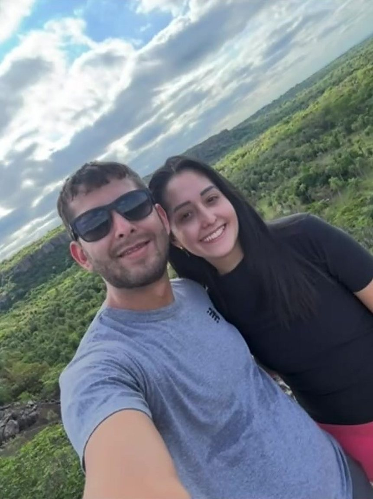
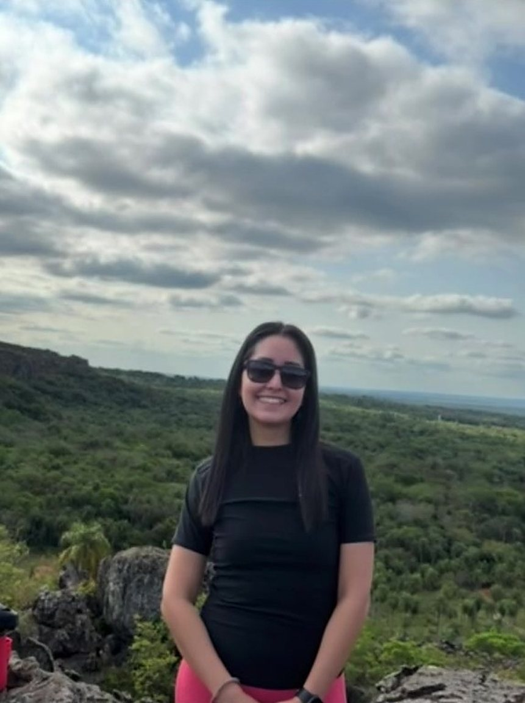
La noche · 11 de noviembre de 2025, Asunción
Un sí, y la vida se acomodó
La ciudad entera encendida, y la única luz que vi fue la tuya. Dijiste que sí, y todo lo que yo cargaba pasó a pesar la mitad.
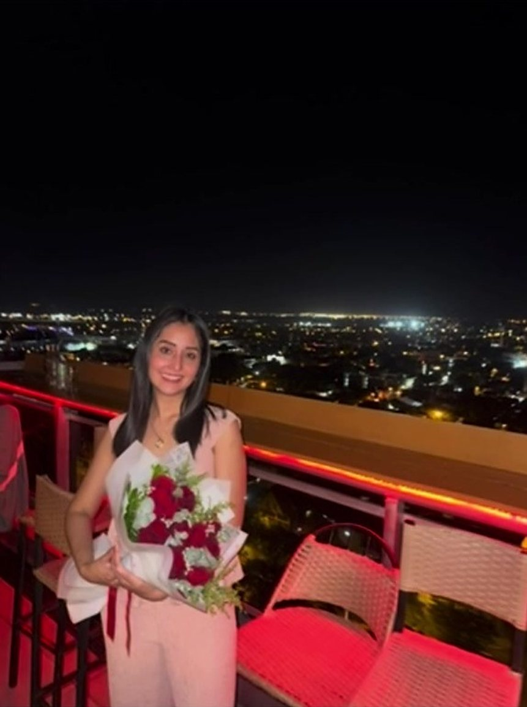
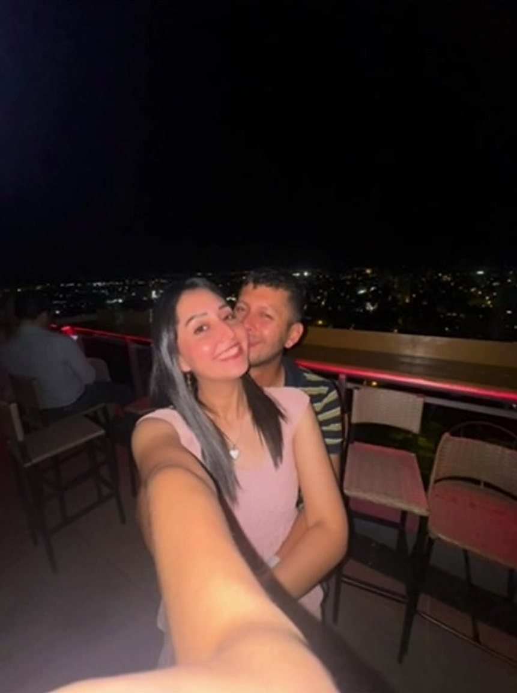
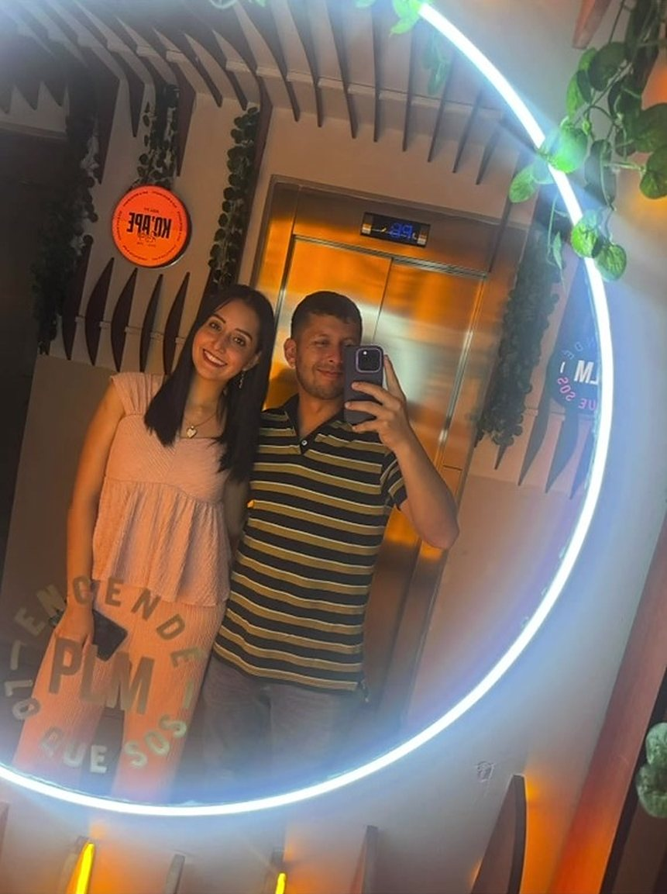
Después · de once en once
Doce luces
Desde esa noche cuento el tiempo de once en once. Acá hay doce luces del camino. Tocá cada una.
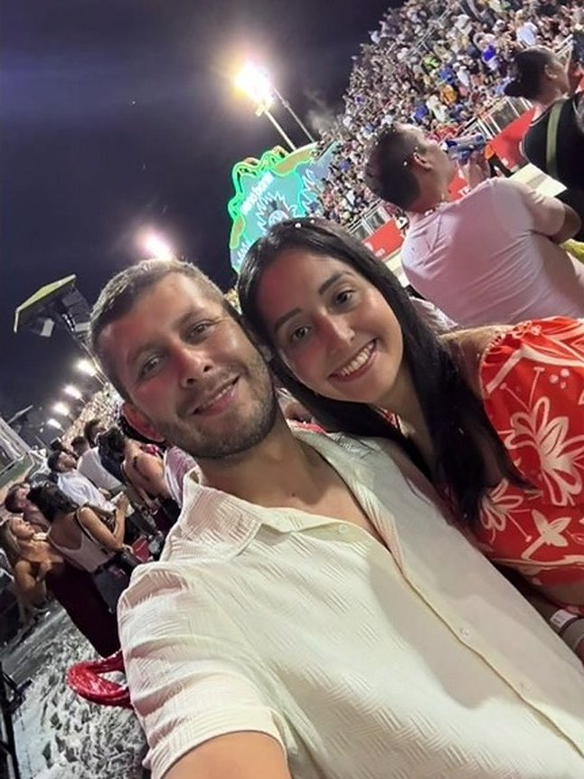
En movimiento
Y a veces solo te miro
Vos ni te das cuenta. Yo guardo el momento.
Para la que baila
Verte bailar es mi parte favorita
A vos te encanta bailar. A mí, mirarte. Acá están tus bailes, para que veas lo que yo veo cuando bailás.
Deslizá para ver más →
Nosotros
Como sea, pero con vos
De gala o descalzos, de fiesta o de mate. Cambia la ropa, cambia el lugar. Lo que no cambia es con quién.
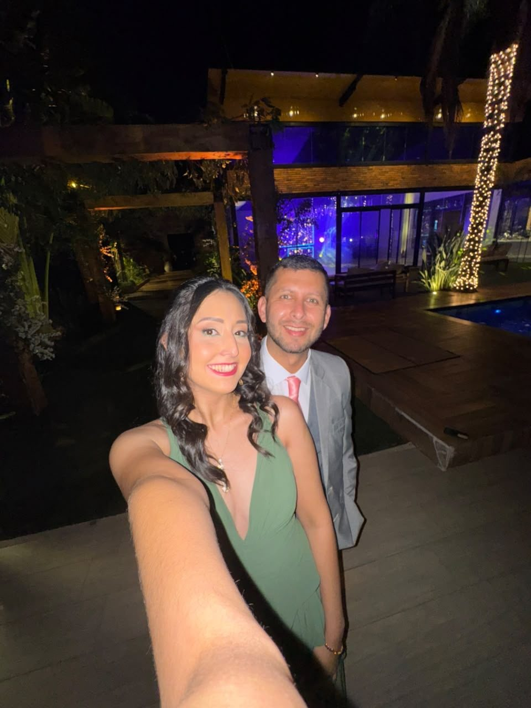
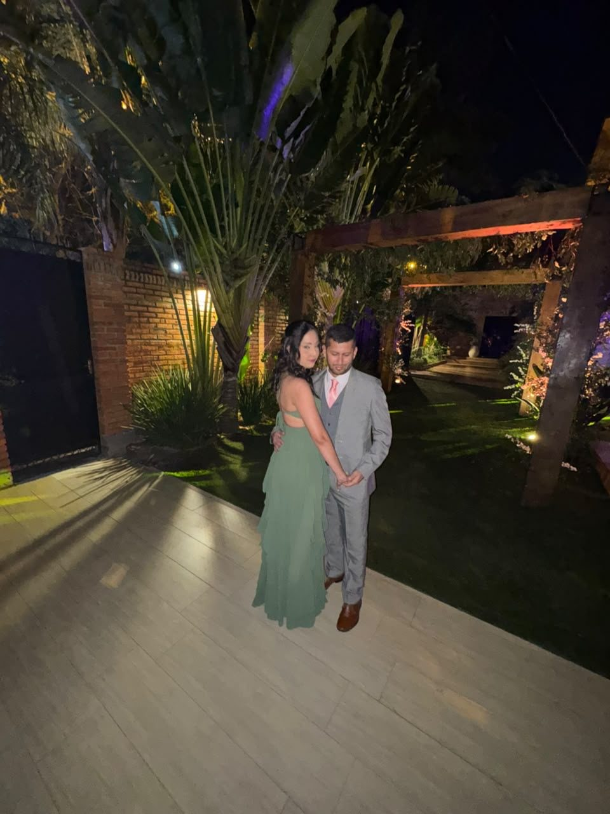
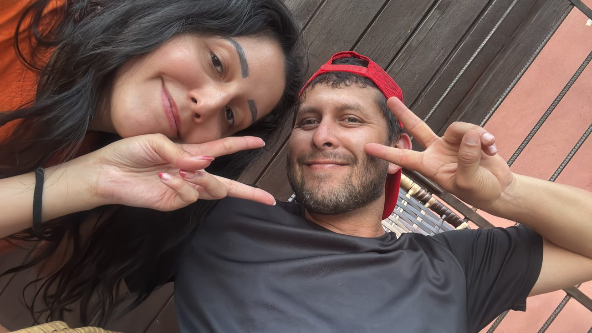
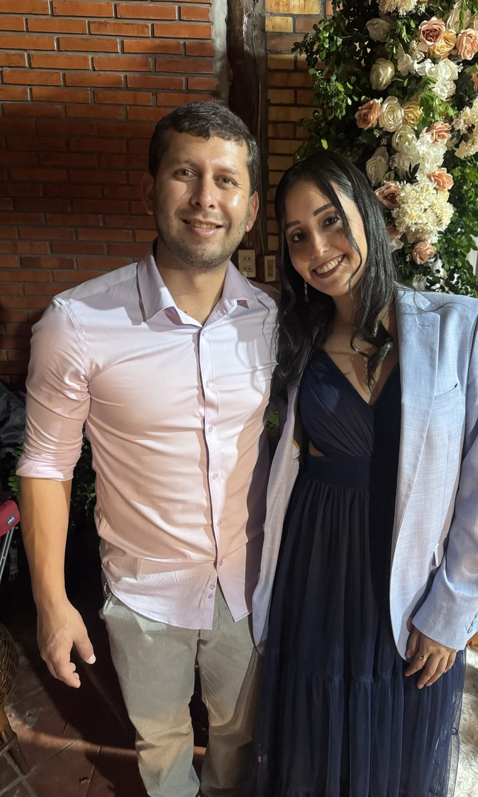
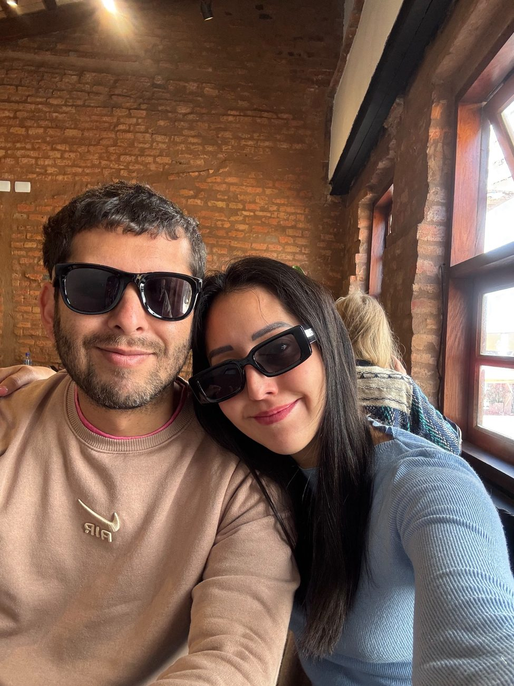
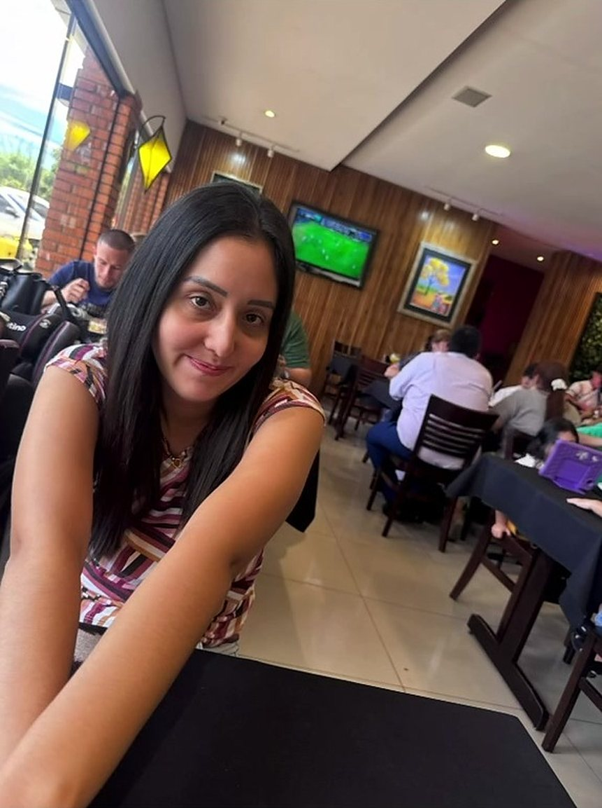
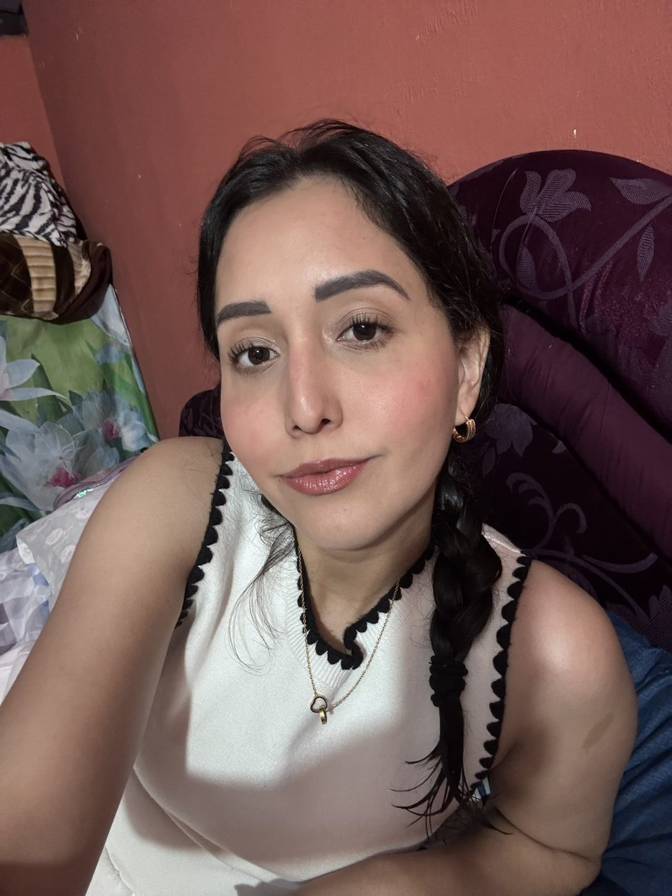
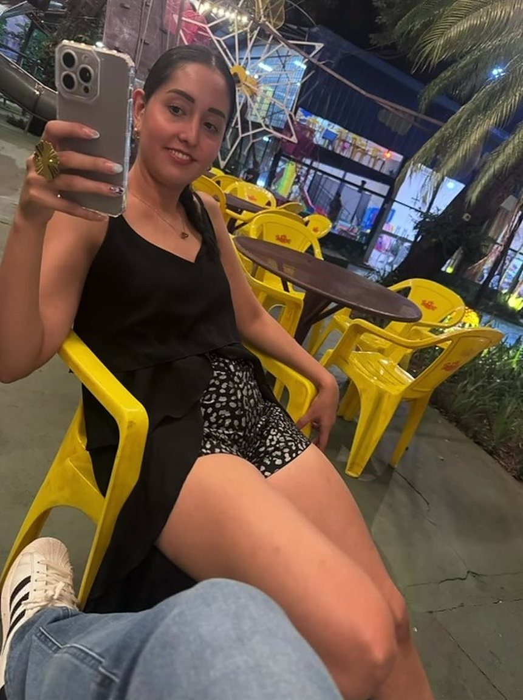
La canción que te escribí
Once de noviembre
Hay gente que llega haciendo ruido vos llegaste haciendo calma un mensaje, un sí bajito y se me ordenó el alma Yo que medía la vida en kilómetros en cargas y madrugadas aprendí otra forma de medirla cuánto falta para tu mirada
·
En lo alto de aquel cerro entendí lo que es altura no es subir hasta las nubes es tu mano en la mía, segura Y una noche de noviembre con la ciudad a nuestros pies rosas rojas, veintidós veintidós y un sí que escucho otra vez
·
Desde entonces no cuento los meses cuento onces, que es contar las veces que te volví a elegir
Coro
Once de noviembre qué puntería tiene la vida el día en que llegaste al mundo llegaste también a la mía Sin ti era algo contigo ya soy todo feliz cumpleaños, mi amor feliz primer año, mi todo
·
Un año de rutas y mates de río, de fiesta y de calma de domingos sin apuro de tu risa como campana No soy fácil, vos lo sabés tengo días de puerta cerrada y vos, con paciencia de río esperás, y la puerta se ablanda
Puente
Si me preguntan qué pido cuando soples tu vela hoy pido memoria para este instante y muchos onces como el de hoy
·
Doce veces once y recién te empiezo a contar
Lo que no sale en las fotos
También hubo días difíciles
A veces tenemos problemas. No lo voy a esconder detrás de fotos lindas: hay días torcidos, silencios largos y palabras que me salen mal.
Gracias por tratar siempre de sobrellevar. Por quedarte cuando irse era más fácil.
Los dos sabemos lo que es perder a un padre. Y aun así miramos el mundo distinto. Hoy veo tu realidad, y entiendo mucho más las cosas.
Un año no se mide solo por lo que se festeja. También por lo que se atraviesa. Y lo atravesamos juntos.
Hoy · 11 de noviembre de 2026
29
años tuyos · casi doce de conocerte · uno de elegirte
Feliz cumpleaños, mi amor
Esta vela es tuya. Pedí lo que quieras.
Quién diría que aquella niña que conocí hace casi doce años, y que ni miraba, sería hoy la mujer de mi vida.
No soy fácil de llevar, y aun así te quedaste. Tu sonrisa es el lugar donde descanso de mí mismo. Gracias por la paciencia, por la calma, por cada once.
Sin ti era algo. Contigo ya soy todo.
Feliz primer año. Que el que viene nos encuentre en el mismo lugar: uno al lado del otro.
Rubén